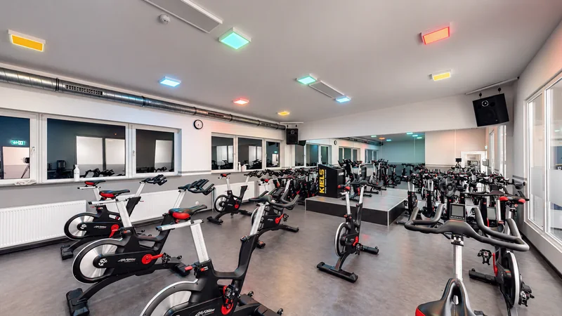
Fitnesskurse in Kiel
Fitnesskurse in Kiel. Deinen Kurs finden.
Power, Cardio, Rücken oder Body & Mind: Im KIELS am Grasweg 48 findest du unterschiedliche Kurswelten. Entdecke, welcher Schwerpunkt zu deinem Ziel passt.

Einblicke in die Kursräume
Räume für gemeinsames Training.
Drei authentische Ansichten aus den Kursbereichen im KIELS.
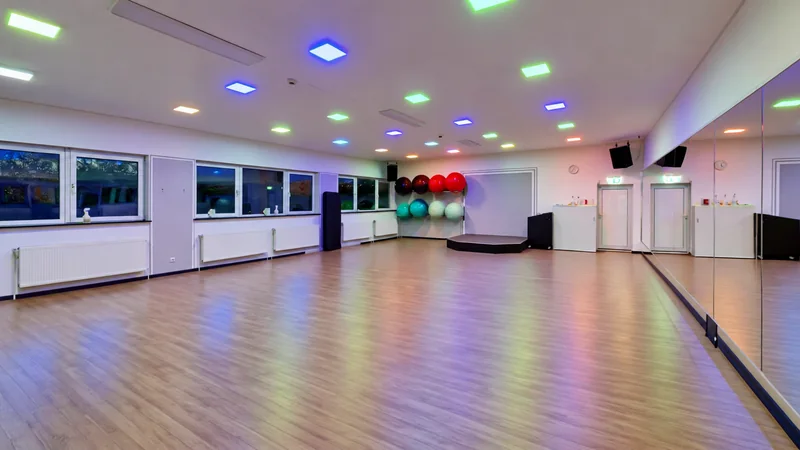
Kursraum 1
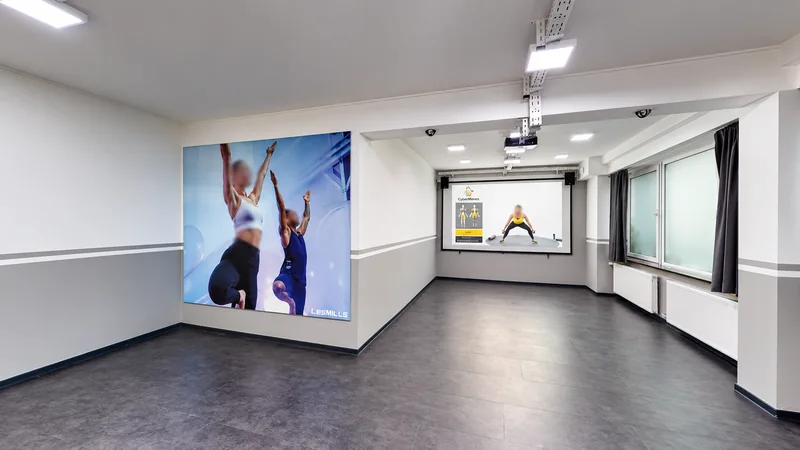
Cyberraum
28 Kurse in sechs Kurswelten
Was möchtest du im Kurs trainieren?
Der freigegebene Kursplan Mai 2026 bildet die Grundlage für dieses Angebot. Jede Kursart erscheint genau einmal in ihrer primären Kurswelt.
Aktueller Kursplan: Kursplan Mai 2026 als PDF herunterladen. Der Plan ist weiterhin freigegeben. Aktuelle Verfügbarkeit kannst du beim Team erfragen.
Deine Kurswelt
Power & Kraftausdauer
Kraft, Kraftausdauer und funktionelles Ganzkörpertraining.
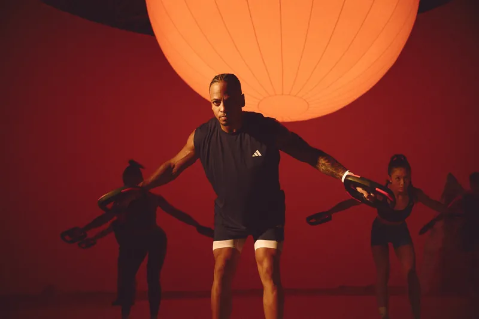
BODYPUMP®
Langhanteltraining mit vielen Wiederholungen für die großen Muskelgruppen. Kniebeugen, Drück- und ZugÜbungen verbinden sich zu einem Kraftausdauertraining zur Musik.
Mehr über BODYPUMP erfahren (offizielle LES-MILLS-Information, neuer Tab)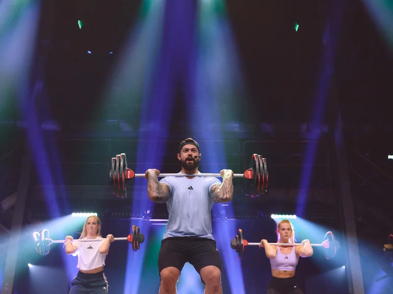
BODYPUMP HEAVY®
Krafttraining mit Langhantel und kontrollierten Bewegungen. Im Mittelpunkt stehen grundlegende KraftÜbungen, saubere Technik und der gezielte Aufbau von Kraft. Eine kraftorientierte Ergänzung zum klassischen BODYPUMP.
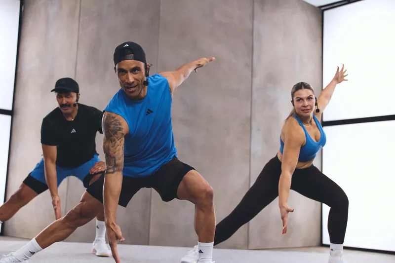
LES MILLS TONE®
Ein Ganzkörpertraining mit Kraft-, Cardio- und Core-Übungen. Unterschiedliche Intensitäten ermöglichen dir, die Belastung an deinen Trainingsstand anzupassen.
Mehr über LES MILLS TONE erfahren (offizielle LES-MILLS-Information, neuer Tab)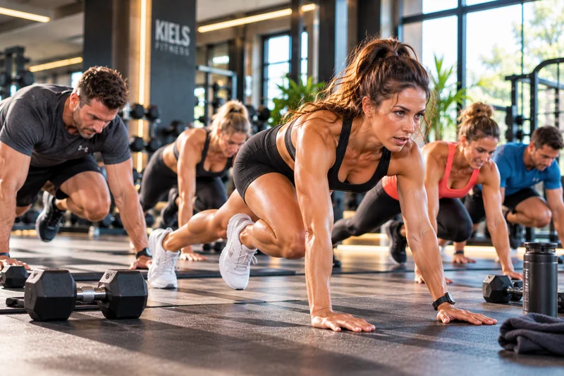
Body Workout
Abwechslungsreiches Ganzkörpertraining für Kraft, Ausdauer und Stabilität. Mit funktionellen Übungen und unterschiedlichen Trainingsreizen bringst du deinen ganzen Körper in Bewegung.
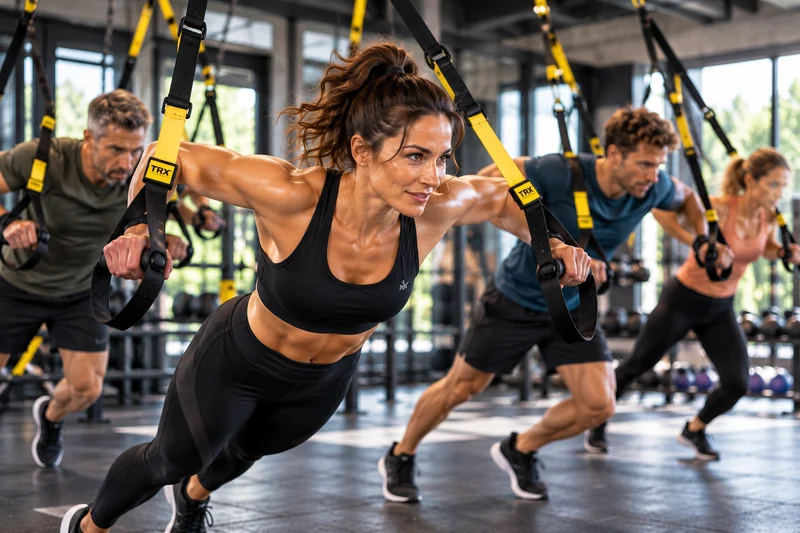
TRX
Effektives Ganzkörpertraining mit dem eigenen Körpergewicht am TRX-Schlingentrainer. Trainiere Kraft, Körperspannung, Koordination und Stabilität – individuell anpassbar an dein Trainingsniveau.
Deine Kurswelt
Rücken, Rückbildung & Gesundheit
Rückenfitness und postnatale Rückbildung als eigenständige Angebote.
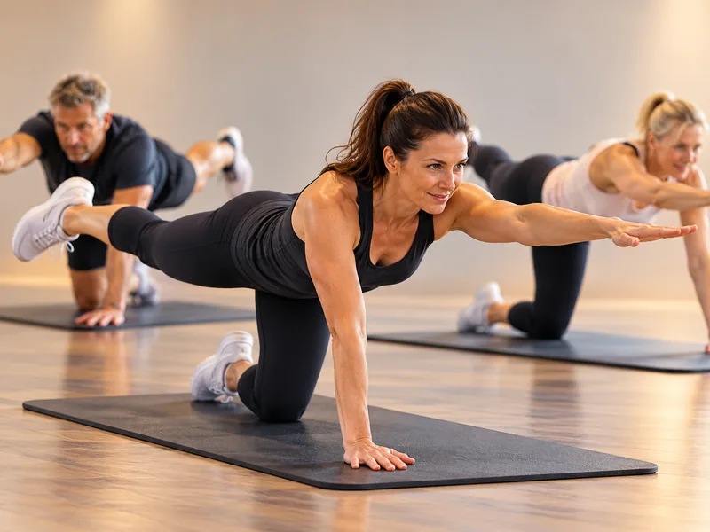
Rückenfitness
Gezielte Übungen zur Kräftigung der Rücken- und Rumpfmuskulatur. Verbessere deine Haltung, Stabilität und Beweglichkeit für einen belastbaren Alltag.
Rückenfitness und Gesundheitstraining kennenlernen ↗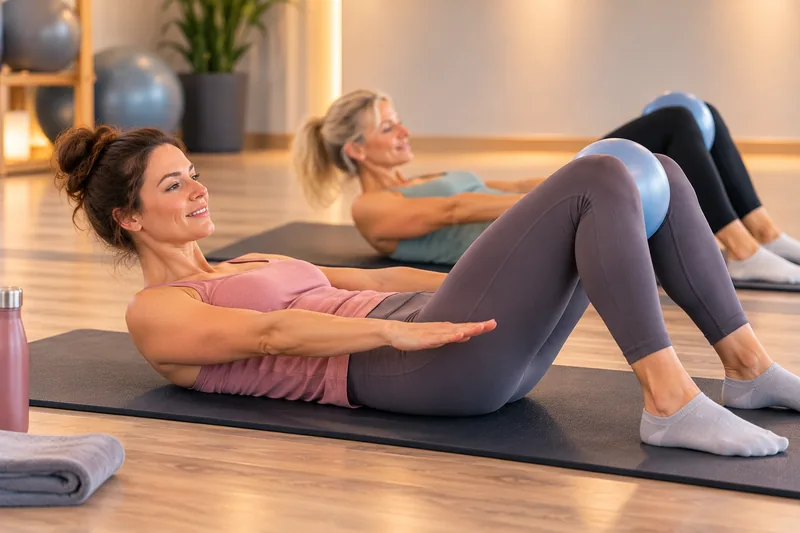
Aufbau Rückbildung
Für Frauen nach einer Schwangerschaft oder Entbindung: Gezielte Übungen unterstützen die postnatale Rückbildung und den kontrollierten Wiedereinstieg in Bewegung.
Deine Kurswelt
Body & Mind
Yoga, Pilates, bewusste Atmung und Körperwahrnehmung.
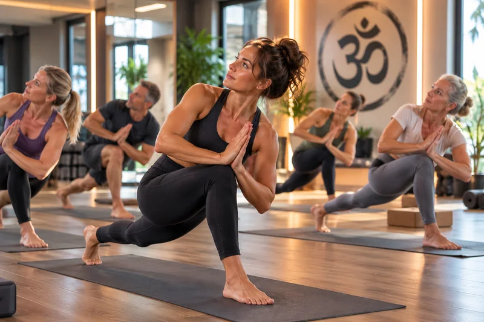
Yoga
Körperhaltungen, bewusste Atmung und EntspannungsÜbungen verbinden Bewegung mit Körperwahrnehmung.
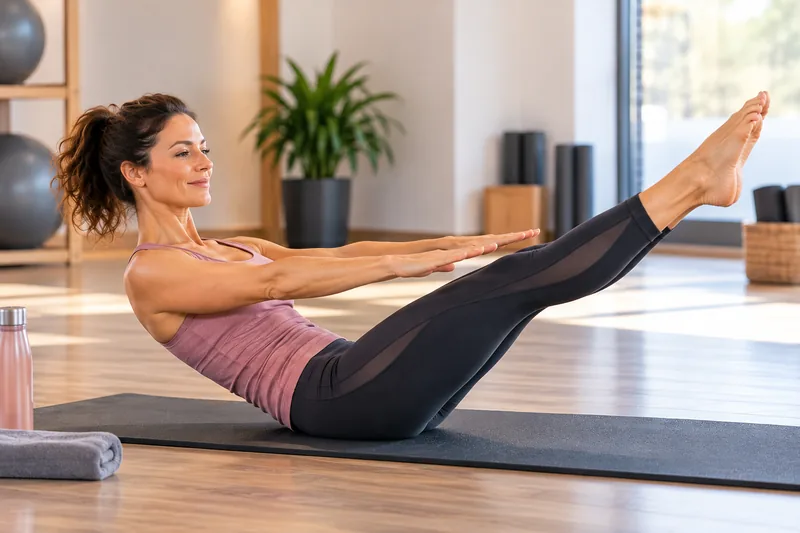
Pilates
Kontrollierte Bewegungen und bewusste Atmung mit Schwerpunkt auf der Körpermitte und tiefliegenden Muskelgruppen.
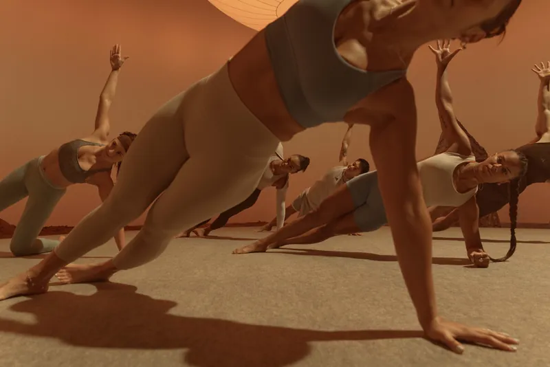
BODYBALANCE®
Ein Kurs mit Bewegungen aus Yoga, Tai Chi und Pilates zur Musik. Dehnungen, KraftÜbungen und bewusste Atmung ergänzen sich.
Mehr über BODYBALANCE erfahren (offizielle LES-MILLS-Information, neuer Tab)Ashtanga Yoga
Eine kraftvolle, dynamische Yoga-Praxis mit festgelegten Übungsabfolgen. Verbinde Bewegung, Atmung, Konzentration und Körperspannung.
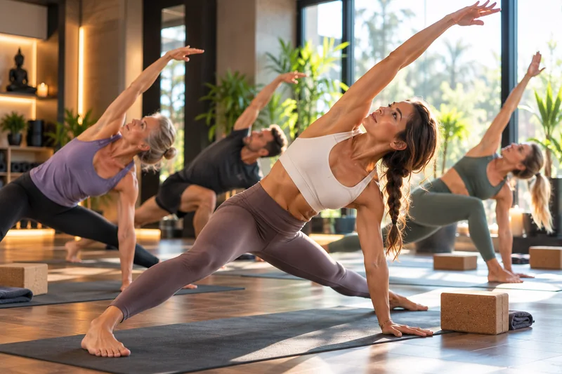
Flow Yoga
Fließende Bewegungsfolgen verbinden Kraft, Beweglichkeit und bewusste Atmung. Ein dynamischer Yogakurs für einen harmonischen Bewegungsfluss.
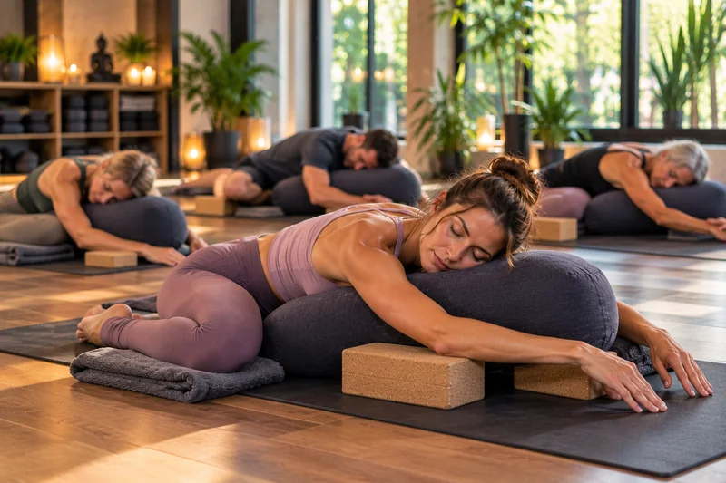
Yin-Yoga
Ruhige Yoga-Praxis mit länger gehaltenen Dehnpositionen. Nimm dir Zeit für Beweglichkeit, Körperwahrnehmung und bewusste Entspannung.
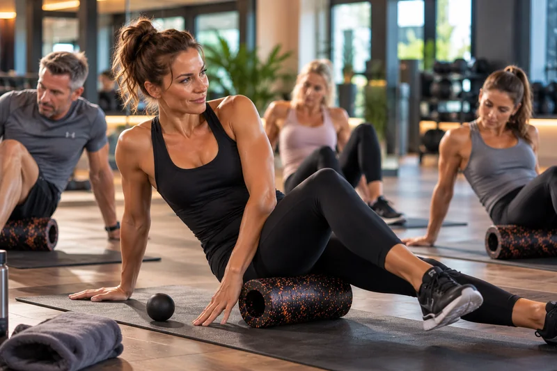
Faszien-Yoga
Sanfte Dehnungen und bewusste Bewegungen zur Fürderung der Beweglichkeit und Körperwahrnehmung. Ideal als Ausgleich zu intensiveren Trainingseinheiten.
Deine Kurswelt
Cardio & Ausdauer
Dynamische Bewegung, Koordination und Ausdauertraining in der Gruppe.
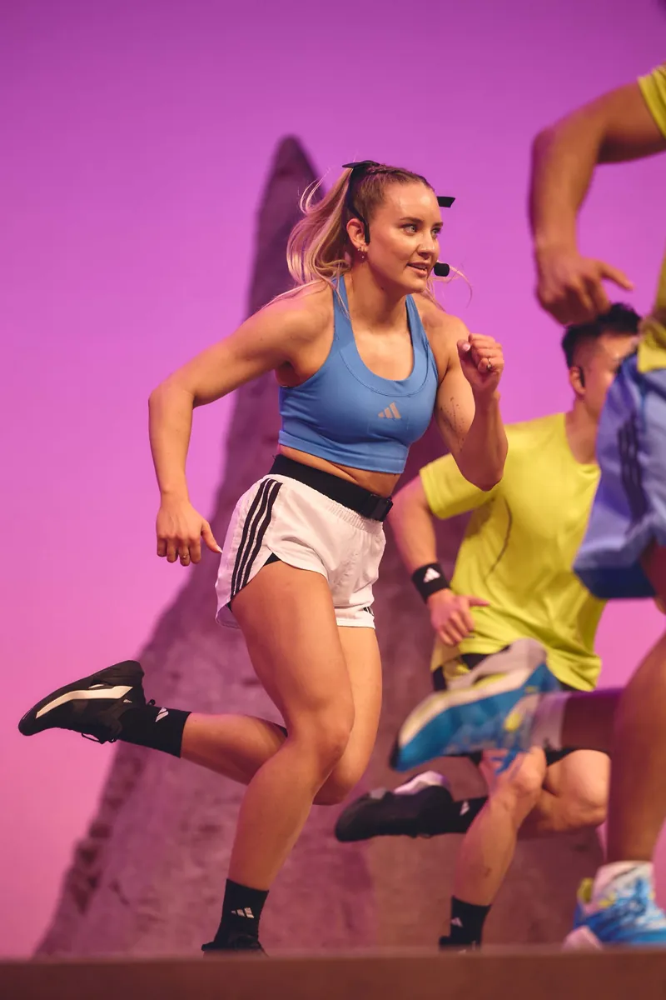
BODYATTACK®
Ausdauer- und KraftÜbungen zur Musik: Laufen, Ausfallschritte und Sprünge wechseln sich mit Übungen wie Kniebeugen und Liegestützen ab.
Mehr über BODYATTACK erfahren (offizielle LES-MILLS-Information, neuer Tab)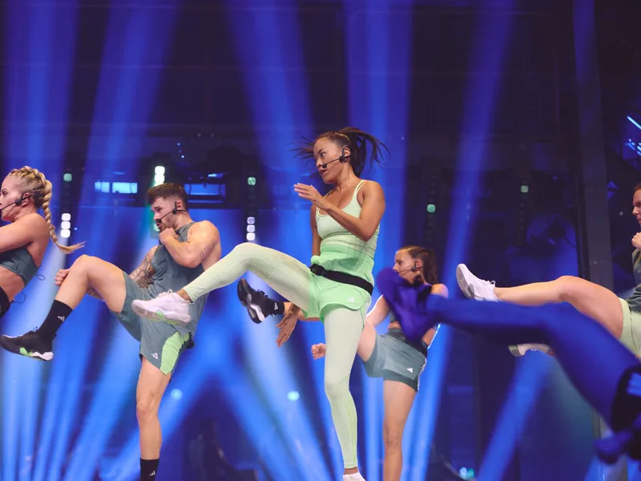
BODYCOMBAT®
Cardio-Training mit Bewegungen aus verschiedenen Kampfsportarten. Schlag- und Trittfolgen zur Musik fordern Ausdauer und Koordination.
Mehr über BODYCOMBAT erfahren (offizielle LES-MILLS-Information, neuer Tab)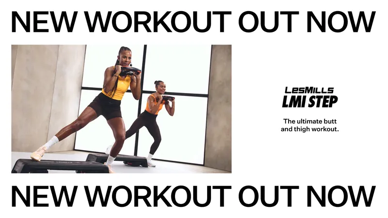
LES MILLS STEP®
Ein Ganzkörper-Cardio-Workout auf dem Step. Einfache Schrittfolgen wechseln sich mit KraftÜbungen ab; Beine und Gesäß stehen besonders im Fokus.
Mehr über LMI STEP erfahren (offizielle LES-MILLS-Information, neuer Tab)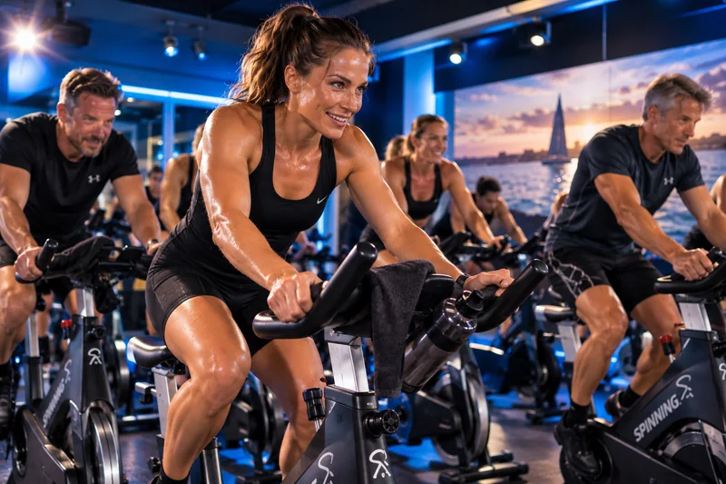
Cycling
Ausdauer- und Intervalltraining auf Spinning-Bikes zur Musik. Der Widerstand lässt sich deinem Trainingsstand anpassen; ein Trainer führt die Gruppe durch wechselnde Tempi.
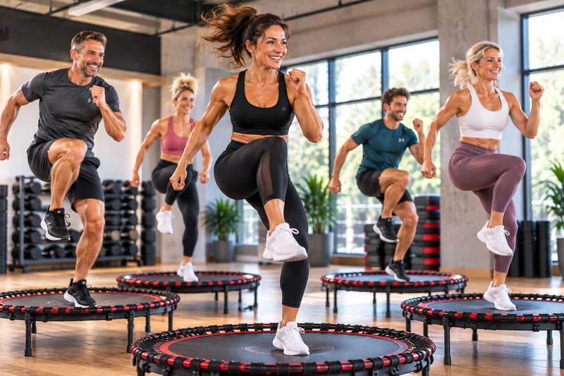
Jumping®
Dynamisches Ausdauertraining auf kleinen Trampolinen. Schritt- und Sprungkombinationen bringen den ganzen Körper zur Musik in Bewegung.
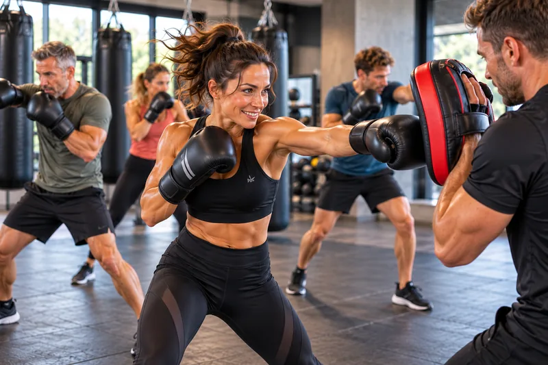
Fitnessboxen
Intensives Fitness- und Techniktraining mit Elementen aus dem Boxsport. Verbessere Kondition, Koordination und Kraft.
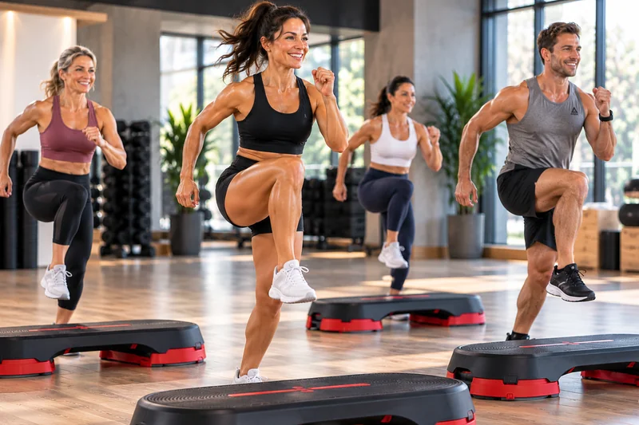
Step Workout
Dynamisches Training auf dem Step-Brett. Abwechslungsreiche Schrittkombinationen fürdern Ausdauer, Koordination und Beinmuskulatur.
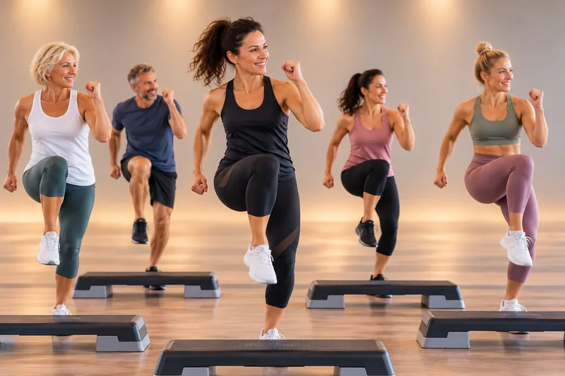
Step-BBP
Schrittfolgen auf dem Step verbinden Ausdauertraining mit kräftigenden Übungen für Bauch, Beine und Gesäß.
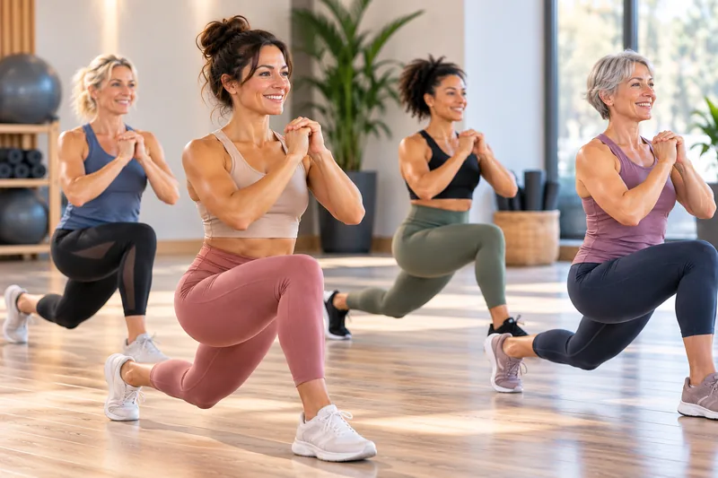
BBP / Bauch Beine Po
Gezieltes Training für Bauch, Beine und Gesäß. Kräftigende Übungen sorgen für ein abwechslungsreiches Workout.
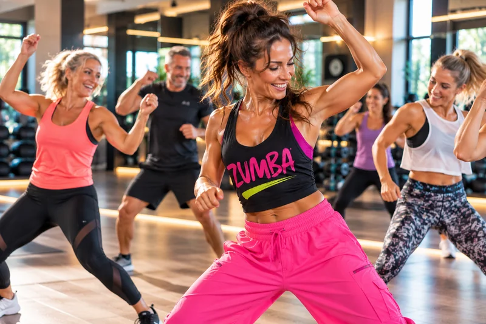
Zumba®
Tanzen, bewegen und Spaß haben! Mit mitreißenden Rhythmen und abwechslungsreichen Schrittkombinationen trainierst du deine Ausdauer und Koordination.
Deine Kurswelt
Beweglichkeit
Mobilisation und Dehnung als Ausgleich zu Training und Alltag.
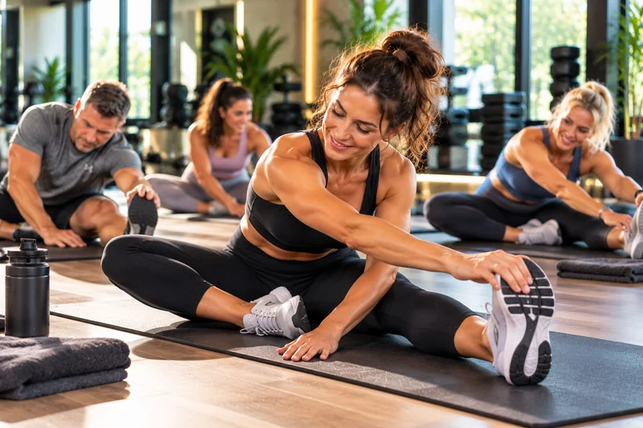
Stretching
Gezielte DehnÜbungen für mehr Beweglichkeit und ein angenehmes Körpergefühl. Ein ruhiger Ausgleich zu Training und Alltag.
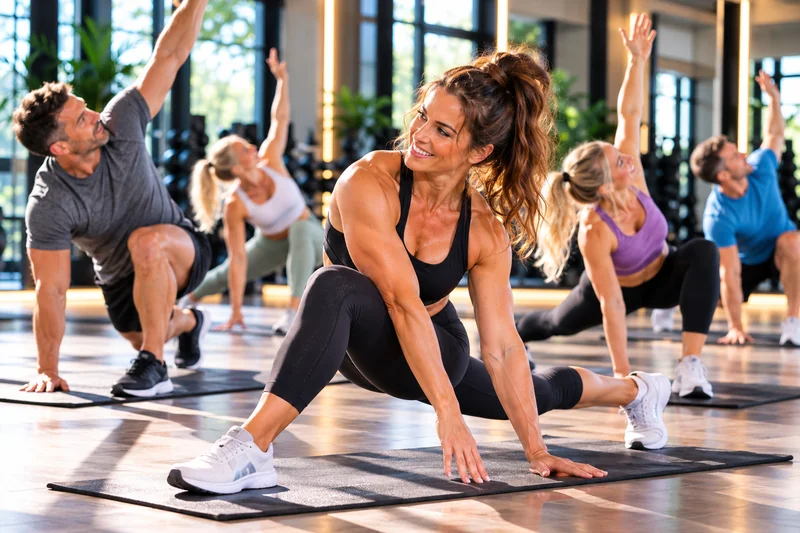
Mobility & Stretch
Aktive MobilisationsÜbungen und gezielte Dehnungen für mehr Bewegungsfreiheit. Verbessere deine Gelenkbeweglichkeit und ergänze dein Kraft- und Ausdauertraining.
Deine Kurswelt
Core & Bauchtraining
Gezieltes Training für Körpermitte, Bauch und Rumpf.
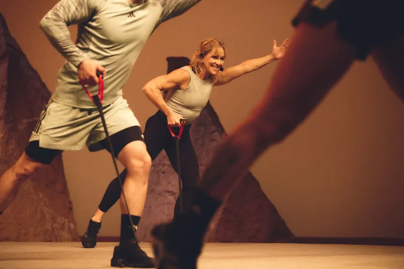
LES MILLS CORE®
Training für eine kräftige Körpermitte. Übungen für Bauch, Rücken und Gesäß unterstützen Kraft und Stabilität der Rumpfmuskulatur.
Mehr über LES MILLS CORE erfahren (offizielle LES-MILLS-Information, neuer Tab)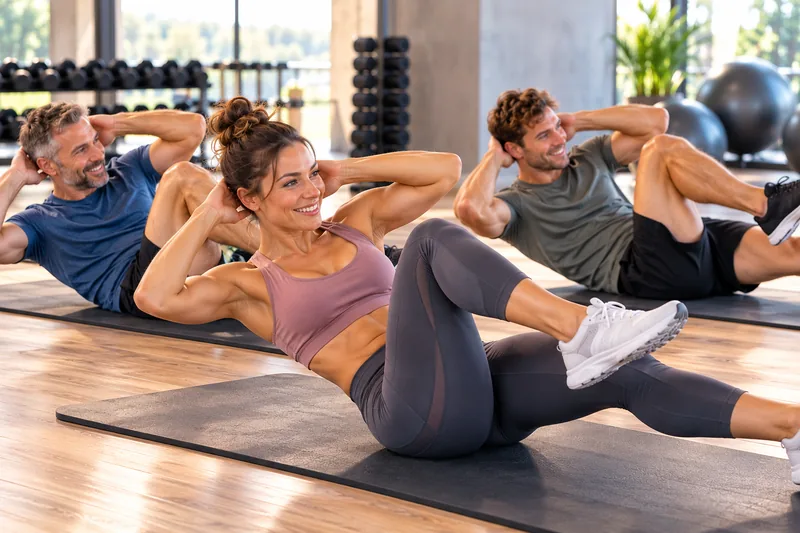
Bauch Intensiv
Kompaktes, gezieltes Training der Bauch- und Rumpfmuskulatur. Mit intensiven Übungen stärkst du deine Körpermitte und Körperspannung.
Dein nächster Schritt
Probiere deinen Einstieg ins Kurstraining.
Sprich mit uns über dein Ziel und frage ein kostenloses Probetraining an.
Kostenloses Probetraining ↗